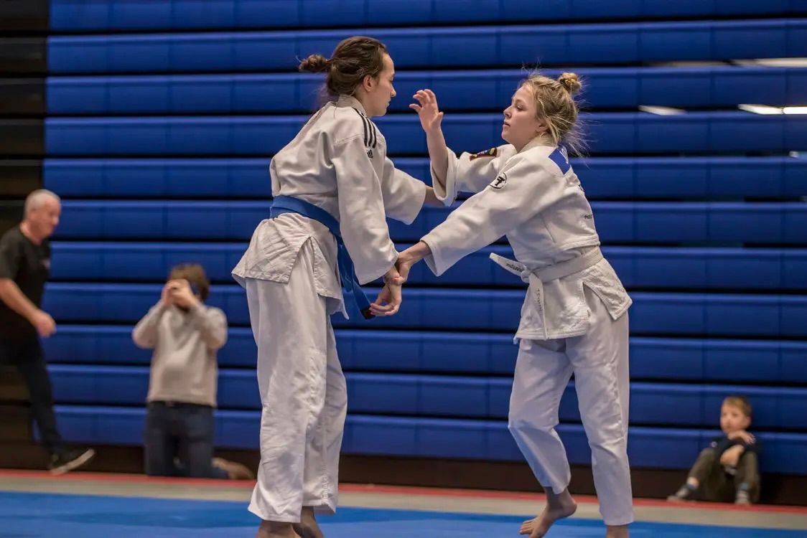
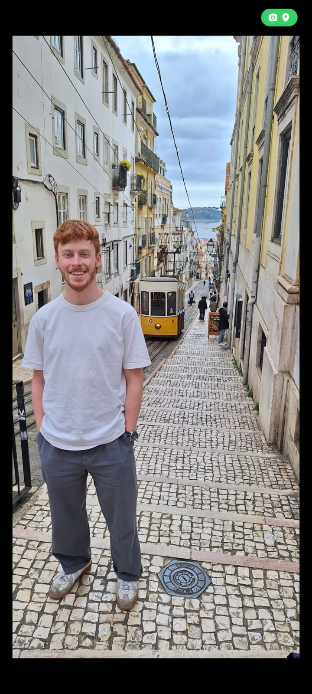
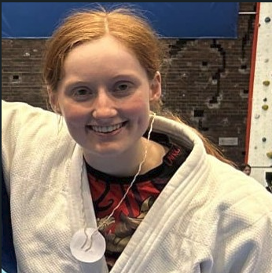
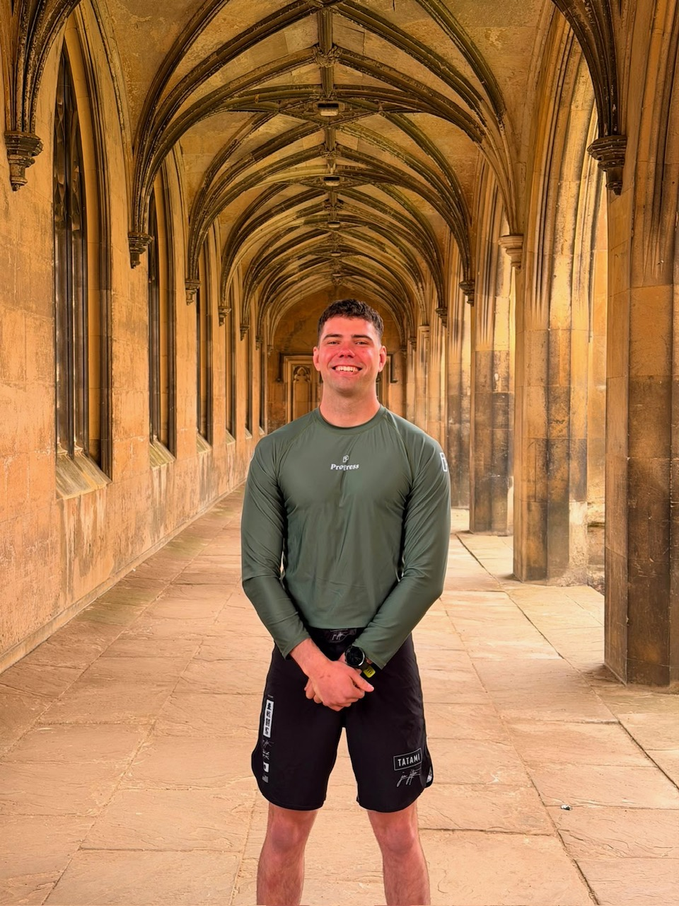
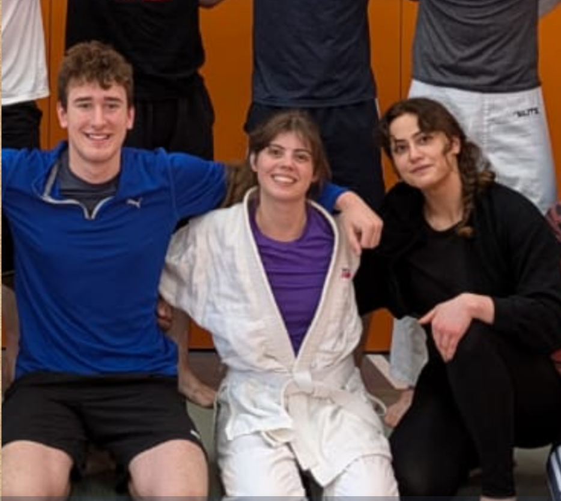
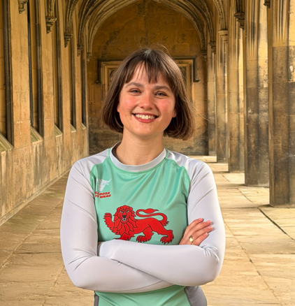
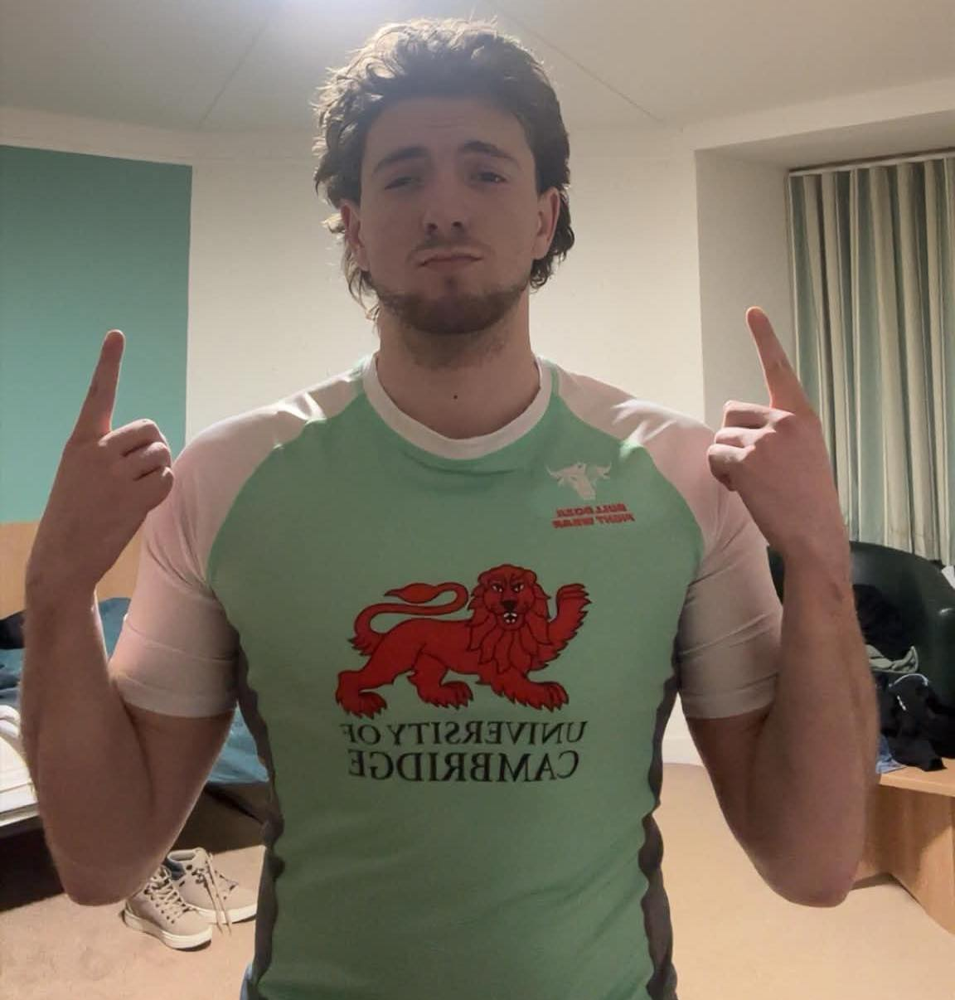
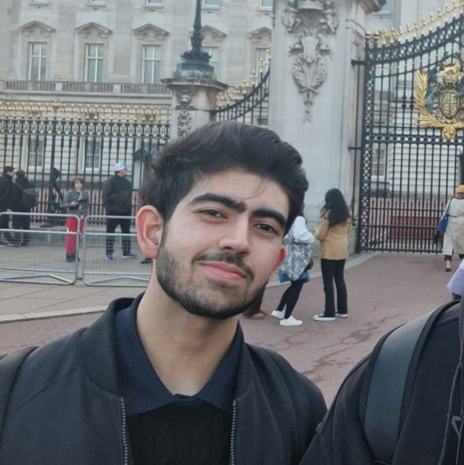
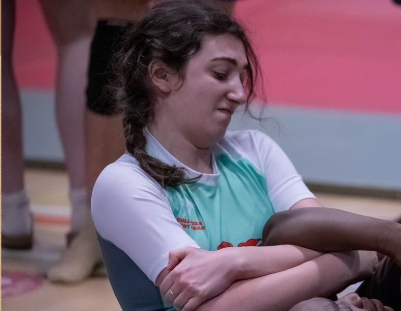

Meet the Team & Society Committee

Stanis Janis
Black Belt
Coach
I began my martial arts journey in the Czech Republic, where I trained in karate and aikido and even represented my country at an international level. Upon relocating to Vienna, I transitioned to new disciplines, delving into MMA and Muay Thai. I trained alongside Mairibek Taisumov, a fighter who would later compete in the UFC. After moving to Cambridge, I continued my MMA training at the now-legendary Tsunami Gym, a club known for producing two UFC fighters: John Maguire and Luke Barnatt. My path took an unexpected turn when I tried a Brazilian Jiu-Jitsu (BJJ) class under Leo Gamarra. From that point on, I committed to BJJ, and found a second home at Brazilian Top Team Cambridge.

Luke Flower
Black Belt
Coach
I'm a black belt under Roger Gracie and have over 15 years of training and coaching experience. I began training and competing in MMA in 2007 as part of the Trojan Free Fights team, before starting medical school at Bristol, where I co-founded the university’s BJJ club. I’ve been fortunate to train and coach around the world, and after moving to London to start working clinically, I began training with Roger and his dad, Mauricio Gomes. I’m now a PhD student at the university, coached the MMA team last year, and am excited to help grow the uni BJJ team!

Nat “The Bull”
Purple Belt
No-Gi Grappling Coach
I’m Nat, known as “The Bull” and jokingly as “The Black Belt Hunter.” I’m a no-gi submission specialist with over a decade of experience. Although I’m a purple belt, I’ve never focused on belt colour - I care about techniques that work under real pressure. That’s why I compete in cage submission grappling formats, where finishing matters more than points. I’ve been undefeated in cage submission grappling since 2018, finishing every opponent I’ve shared the cage with including a mixed-weight Varsity win in 2025 against a much larger competitor, which for me captured the essence of jiu jitsu: technique over size. With over three years of coaching experience in MMA and grappling, my style is direct, practical, and finish-focused. I’m committed to helping students build high-percentage submissions and escapes they can rely on under real pressure, while keeping training safe, enjoyable, and competition-driven.

Emilie
White Belt
President
Emilie is a judo-BJJ enthusiast. She started both sports as an undergraduate at UWarwick and is forever deeply thankful to her wonderful coaches and mates 😉

Mason
Blue Belt
Secretary
Mason started trainnig BJJ towards the end of primary school but unfortuantely stopped when COVID came around. He is now looking forward to seeing this club thrive and getting back on the mats!

Caitríona
White Belt
Treasurer
I am a first year PhD student in Physics, I joined the BJJ club this year and I have been training Judo since my undergrad in St Andrews. I love drawing, physics, and grappling!

Dr Chris Macdonald
Blue Belt
Senior Treasurer
Dr Chris Macdonald is a Lab Director and Fellow at Lucy Cavendish College, University of Cambridge; a Fellow at the Institute of Corporate Responsibility and Sustainability; a Public Engagement Fellow at Cambridge Zero; a Supervisor at the University of Cambridge Institute for Sustainability Leadership; and Director of the Better Protein Institute. Dr Macdonald was recently named winner of the 40 Under 40 Award for Science and Innovation and was the winner of "Best Start-Up" at the Global EdTech Awards. (Chris is also a mediocre but enthusiastic jiu-jitsuer).

Tristan
Blue Belt
Club Captain
Tristan is a blue belt with three years grappling experience. He enjoys leg locks and inversions that will probably cause him long term health issues. Once went 0-6 in a competition (all submissions).

Lily
White Belt
Women's Captain
Lily is a judo and bjj fan, saving lives as a medical student.

Manon
White Belt
Social officer
I’m a BJJ newbie, and for what I lack in technique I’d like to say I make up for in laughter. Off the mats, you’ll find me in a lab studying breastmilk or elsewhere nibbling on blue cheese. As social secretary, I’m always happy to chat about anything and everything!

Kevin
White Belt
Beginners' Captain
I’m a chemical engineering undergrad who started BJJ this year after grappling with friends back home and getting recommended to try it. In my opinion, it’s the best martial art out there, and it’s also super beginner-friendly. You’ll probably find me on the mats trying to triangle someone. When I’m not training, I’m the beginner captain, so if you’re thinking about competing or have any questions, come say hi.

Dylan
White Belt
Welfare Officer

Alexander
White Belt
Health and Safety Officer

Umar
White Belt
Kit Manager

Arielle
White Belt
Communications officer
Iv’e been doing Capoeira for 10 years and decided to try out a new Brazilian martial art in Cambridge. I have discovered BJJ is an amazing sport, and an awsome society! Emilie (our president) offered me to join the committee and I am now one of the two communication officers. I am also a third year undergrad Natsci.

Yuv
White Belt
Communications officer
Yuv is one of our new communications officer.